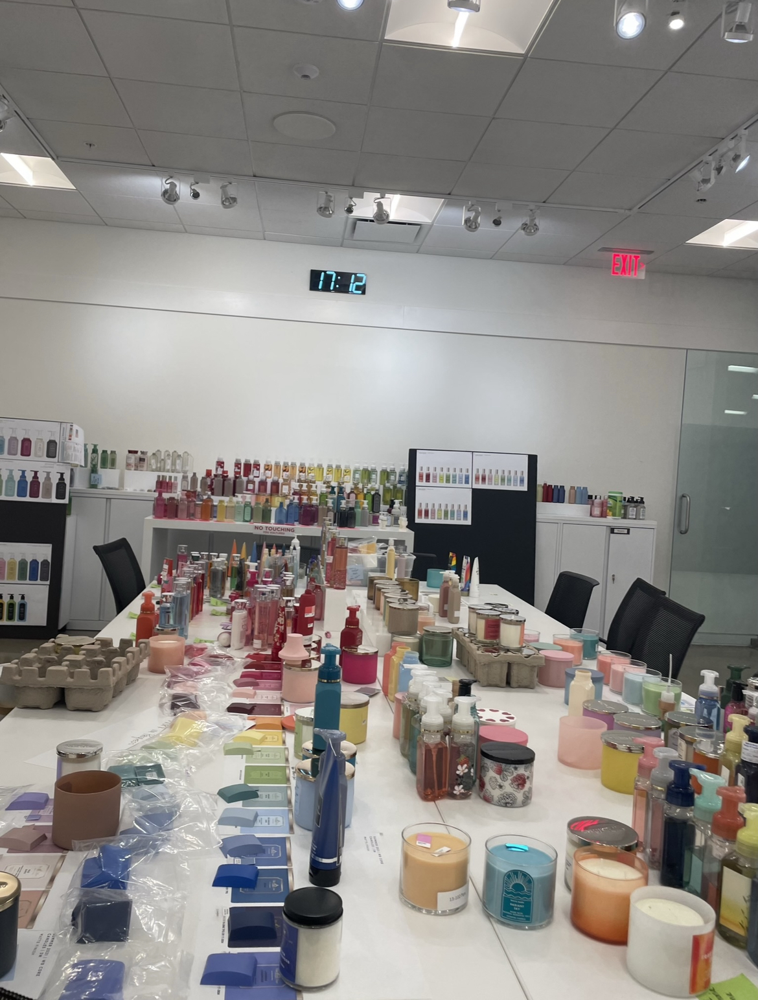

Internships & Jobs:
- UpMerch: Sales intern and representative for the University of Wisconsin-Madison
- Up North Boutique: Marketing intern
- Bath and Body Works: Digital Merchandiser for Soaps and Sanitizers and 3-Wick Candle categories
- Badger Call: Student caller for the UW Alumni Foundation
- Delta Delta Delta Sorority: VP Marketing and PR, Social chair, Conduct committee
Relevant Classes Taken:
- MKT 355
- MKT 410
- MHR 305
- MHR 403
- CA 155
- GB 301

Course Assortment Note:
- Importance of Variety in Skillset
- - Two Business Majors resulted in majority business course load
- - Ensure an assortment of courses, even outside of the business school, in order to best equipt yourself with creative digital skills that are required within the marketing and management side of the industry
- - Course portfolio should show complexity in skills both analytical and creative scopes